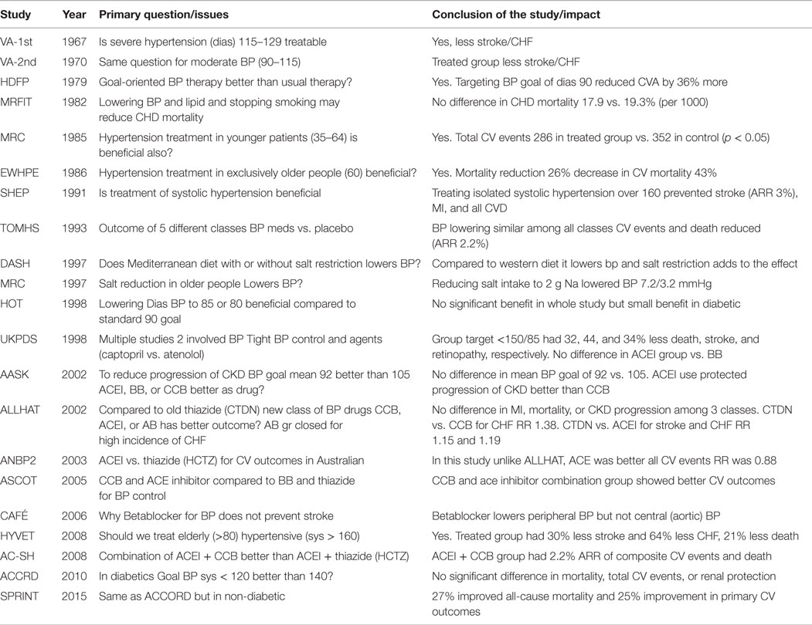

Blood Pressure Thresholds and Targets for Pharm Therapy
| Population | Threshold | Target |
|---|---|---|
| Macrovascular disease | 140/90 | <140/90 |
| Diabetes | 130/80 | <130/80 |
| High risk (SPRINT) | SBP 130 and other risk factors (see below) | SBP < 120 |
| PKD | HALT-PKD population | SBP < 95-110 |
| Non-SPRINT CKD | SBP < 140 | |
| History of spontaneous ICH | <130/80 |
SPRINT, or "High-Risk" Population:
SBP > 130 and one of: 1) Age 50+ with clinical or subclinical CVD, eGFR 20-60, proteinuria < 1 g/d, 10-year CV risk 15%+ 2) Age 75+
Pharmacotherapy
First-Line Therapy
- Single-Pill Combinations (SPCs):
- ACEi + CCB preferred.
- ARB + CCB
- ACE/ARB + diuretic
- Diuretics: long-acting TDs (chlorthalidone, indapamide) preferred over HCTZ
- ACE/ARB
- Long-acting CCB
- Beta-blockers (if young or with CVD)
Second-Line Therapy
- add on drugs from the first-line choices:
- thiazide + DHP-CCB
- DHP-CCB + ACEi
- avoid:
- ACE + ARBC
- Dilt/verapamil + Beta blocker
Specific Population Therapies
| Population | Recommendations |
|---|---|
| Diabetes | ACE/ARB (especially with albuminuria or CKD), DHP-CCB, thiazide. If combination therapy with ACEi is needed, a DHP-CCB is preferred over a thiazide. |


Lifestyle Interventions
| Intervention | Recommendation |
|---|---|
| Exercise | 30-60 minutes, moderate intensity, 4-7 days weekly |
| Weight | BMI 18.5-25, waist circumference <102 cm (M) <88 cm (F) for HTN prevention |
| Alcohol | Abstain from alcohol |
| Diet | DASH diet |
| Salt intake | <5 grams daily, <2 grams sodium |
| Potassium supplementation | Consider if not at risk of hyperK |
| Stress reduction | CBT, relaxation, etc. |
| Smoking cessation | Pharmacotherapy + counselling |
| Ca++/Mg++ supplementation | None |
Major Hypertension Trials

SHEP (1991)
DASH (1997)
ALLHAT (2002)
RCT to determine whether the occurrence of fatal CHD or nonfatal myocardial infarction (MI) is lower for high-risk patients with hypertension treated with amlodipine, lisinopril, doxazosin, or chlorthalidone.
Upon analysis of the data, the primary outcome, fatal coronary artery disease or nonfatal MI at 6 years, was similar among all groups. There was also no significant difference in all-cause mortality, a secondary outcome, among the groups. - When comparing amlodipine with chlorthalidone, the amlodipine group had a 38% higher risk of heart failure (HF) (P<.001) and a 35% higher risk of hospitalized/fatal HF (P<.001). - When comparing lisinopril with chlorthalidone, the lisinopril group had a 15% higher risk for stroke (P=.02), a 10% higher risk of combined cardiovascular disease (CVD) (p<0.001), a 19% higher risk of HF (P<.001), and an 11% higher risk of hospitalized/treated angina (P=.01).
As a result, the authors of the study concluded that thiazide-type diuretics are superior in preventing CVD and recommended that they be preferred for first-step antihypertensive therapy. Because of results from the study, the JNC 7 hypertension guidelines recommended that diuretics should be initiated in stage I hypertension.
ACCOMPLISH (2008)
In patients with hypertension at high risk for cardiovascular complications, the combination of benazepril-amlodipine is superior to benazepril-hydrochlorothiazide in reducing cardiovascular events.
ACCORD (2010)
In diabetic, is SBP < 120 better than < 140? No significant difference in mortality, total CV events, or renal protection.
SPRINT (2015)
Among patients at high risk for cardiovascular events but without diabetes, intensive blood pressure control to a target SBP <120 mmHg improves cardiovascular outcomes but increases the rates of some adverse events.
Secondary Hypertension
Causes
- Renovascular Hypertension
- Endocrine (pheochromocytoma, thyroid disease)
- Primary hyperaldosteronism
- Obstructive Sleep Apnea
References
- 5 Blood Pressure Studies Pharmacists Should Know About
- Frontiers | Timeline of History of Hypertension Treatment
- Hypertension 2020 Guidelines
- IM Review 2021 - Nephrology Slides